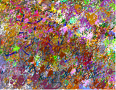
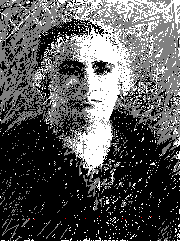

The KINETIC COMPUTER PAINTINGS are considered by many to be the most significant Samia Halaby's work on the computer. As a matter of fact, everything in this virtual web studio is digital art work. But in her analog studio she uses traditional media such as oil and encaustic and all manner of drawing and some print-making.

On the left is "Flowers From MaryAnn" and on the right is "March Dark." These two paintings differ mainly because they embody different concepts of time. One freezes reality and tries to catch its appearance. The other one generalizes appearances based on the passage of time and thus the effects of motion. The two are related. Click here to read an essay by the artist about these ideas. Also please open the chapter on ABSTRACTION to see the abstract work.

"This is the great Palestinian woman who influenced my life." Select HOME IN PALESTINE here or below to see more of this new series of drawings which began with a journey to her home in Palestine. When you open this chapter you will find many subchapters.
This is the (TRI) TRIangular traffic island which divides West Broadway (BE) BElow (CA)CAnal in her neighborhood of TRI-BE-CA in New York City. "One night as I walked up to SOHO I saw how beautiful the trees looked illuminated by the city lights. I came home and drew it immediately before my memory of it faded." Select Illusionistic Paintings here or from the comprehensive list below to see more of this side of her work. But remember that she is essentially an Abstract painter.
Copyright, Samia A. Halaby, 1998, All rights reserved.
Select from the following menu representing the entire studio:
Chapter I ... Grandmother, ... Chapter II ... Beisan, ... Chapter III ... Jerusalem, ... Chapter IV ... Sabah, ... Chapter V ... Yafa, ... Chapter VI ... Khader, ... Chapter VII ... Vera, ... Chapter VIII ... Students, ... Chapter IX ... Taxi, ... Chapter X ... Doctor, ... Chapter XI ... Hasan, ...
="pointer-events:none;cursor:default;" href="http://www.art.net/">


![[Art on the Net]](/images/artnet_button.gif)